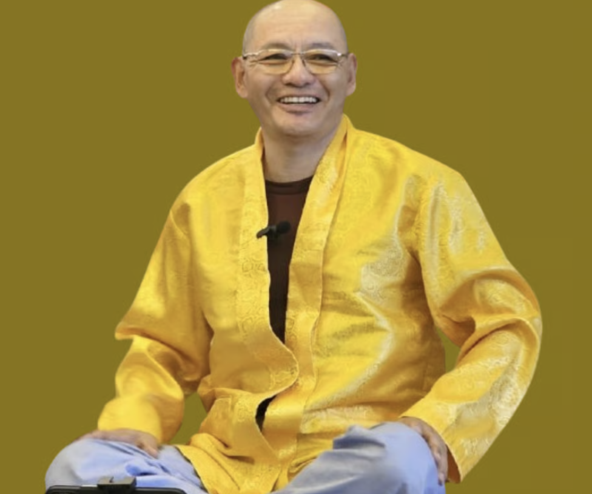
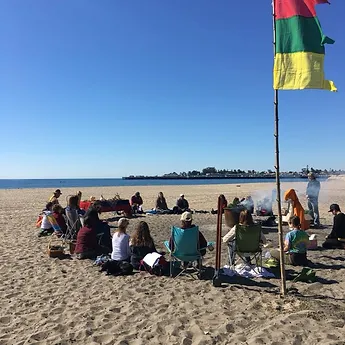
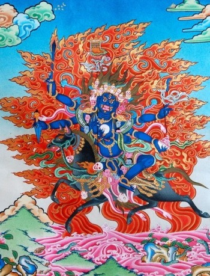

Kunsang
Siempre excelente, todo bueno, completo, perfecto y siempre positivo.
Centro Budista Kunsang Gar México
Sabiduría antigua para la sociedad moderna.
Promover la Sabiduría de Kunsang Gar y llevar las tradiciones antiguas a la sociedad moderna para nutrir mentes más pacíficas, promover la curación física y ambiental y encontrar la máxima realización de la verdadera naturaleza.
Nuestro principal estudio y práctica es Dzogchen o Meditación de la Mente Natural.

Las mayores aspiraciones de Geshe Namgyal y los miembros de Kunsang Gar son promover la Sabiduría de Kunsang Gar y llevar las tradiciones antiguas a la sociedad moderna.
Kunsang
Siempre excelente, todo bueno, completo, perfecto y siempre positivo.
Gar
Campamento o lugar. Un espacio para la bondad para todos, en todas partes y en todo momento.
Práctica principal
Dzogchen o Meditación de la Mente Natural.
Maestro y fundador
Geshe Dangsong Namgyal es el maestro y fundador de Kunsang Gar. Conoce su trayectoria y el contexto institucional de sus enseñanzas.
Conoce a Geshe DangsongAcompañamiento
Prácticas y ceremonias espirituales de Kunsang Gar.
Acompañamiento espiritual para espacios de vida y trabajo.
Orientación espiritual relacionada con la muerte y la transición.
Un espacio para solicitar orientación sobre la práctica.
Estudio y desarrollo
Un programa para comprender los fundamentos y desarrollar una mente con mayor salud mental, equilibrio emocional y paz.
Conoce las clasesComprensión fundamental y enseñanzas para comenzar el estudio.
Prácticas para cultivar equilibrio emocional y una mente en paz.
La profundización del camino de estudio y práctica.
Tradición
Bön es la cultura espiritual indígena de Zhang Zhung, el área que rodea el monte Kailash en el Tíbet actual. La tradición Bön tiene una rica historia de tantra, chamanismo y meditación.
Conoce la Tradición Bön
Participa
Encuentra clases semanales, programas y actividades de Kunsang Gar en modalidad presencial y en línea.
Ver clases y actividadesCamino de práctica
Un camino de práctica, sabiduría y reconocimiento espiritual.
La certificación contempla una participación mínima del 75%.
Conoce la certificaciónPráctica
Existen oraciones y recursos de práctica dentro del archivo de Kunsang Gar. Su disponibilidad y uso dependen de las indicaciones correspondientes.
Conoce Oraciones
Apoya la continuidad
Conoce las formas de apoyar a Kunsang Gar México.
Informes por WhatsApp 55 3126 7773